Radio User Guide
The 2.4G radio module on RTL87x2x is a full-featured transceiver working at 2.4GHz frequency band, which can be flexibly applied to developing any proprietary wireless communication protocol. The features of the module are listed below:
Frequency band: 2402MHz~2480MHz, 1MHz step
Modulation: 1Mbps/2Mbps GFSK
Coding: whitening, CRC
Configurable packet format
Modes: oneshot/periodic/GPIO triggered PTX, oneshot/continuous PRX, auto ACK
Data DMA transfer
PSD for environment interference evaluation
System Block Diagram
The system block diagram of the software and hardware parts of the 2.4G module is shown in Figure System Block Diagram.

System Block Diagram
Hardware components:
PHY: includes RF and Modem, responsible for baseband and radio frequency processing.
IO: Peripherals related to 2.4G, including GPIO and enhance timer.
BTMAC & DMA: It is from BT module and will provide support for 2.4G function.
2.4G MAC: Responsible for 2.4G Link Layer behavior.
PM: Power management.
Software components:
2.4G driver: includes register access encapsulation, initialization, MAC status management, dependent module initialization and encapsulation, memory management, etc.
2.4G protocol: private protocol, not within the scope of this article.
Function Introduction
Packet Format
The packet format supported by the radio consists of five parts: Preamble, Access Address, Header, Payload, and CRC. The packet format is depicted in Figure Frame Structure.
{kind=link}
Frame Structure
- Preamble
The length of the preamble is configurable. The content is the same for each byte when it is multi-byte, and the content is determined based on the first bit of the access address field. If the first bit of the access address is 0, the preamble value will be 0xAA; otherwise, it will be 0x55.
- Access Address
The length of the access address is configurable. The access address is used by the radio to filter packets; only the packet matching the access address will be handled. Therefore, in one communication direction, the sending and receiving ends must be configured the same.
- Header
The header contains 3 fields as shown in Figure Header Structure:
Header Prefix
Length
Header Suffix
The length and content of each field can be configured independently. The length field only contains the length of the payload field.
{kind=link}
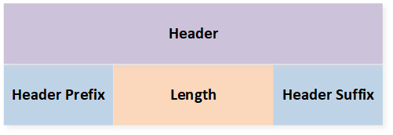
Header Structure
- Payload
The payload denotes the application data part. The length of the payload field is variable and is specified by the Length field in the Header.
- CRC
The CRC is the frame check field, checking the range from the header field to the payload field. The CRC length, poly formula, and initial value are configurable.
Whitening Coding
The radio supports data whiten coding to avoid consecutive 0 bits or 1 bits in the data stream. The range of whitening includes the header, the payload, and the CRC. The whitening length, poly formula, and initial value are configurable.
State
The 2.4G radio module has four states: Standby, PSD, PRX, and PTX states. Different states can't coexist, therefore, the software can switch the states, as shown in Figure State Machine.
Two devices in the PTX and PRX states respectively can play the role of both ends of the 2.4G point to point communication. The device in the PRX role listens to the channel passively, and the device in the PTX role transmits actively. The PSD state is used to detect environmental signal strength. When it is necessary to evaluate the interference in the environment, one or more channels can be designated for detection.
{kind=link}
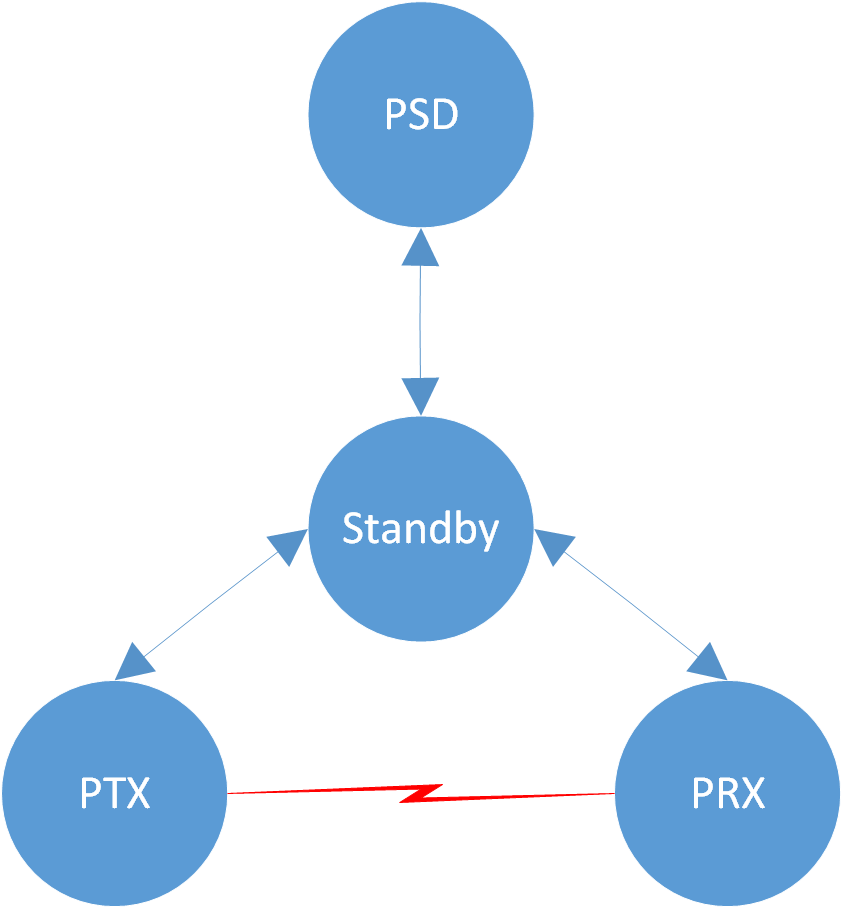
State Machine
Note
Both PTX and PRX roles support multiple mode options, each mode can be turned on or off separately.
Repeat Mode
In the PTX role, it can be configured in oneshot or periodic modes.
Repeat Mode |
Description |
|---|---|
Oneshot Mode |
Every time the software issues a PTX Enable command, the hardware will send data once and then automatically switch back to the Standby state. |
Periodic Mode |
The software only needs to issue the PTX Enable instruction once, and the hardware will continue to send data periodically until the software actively issues the PTX Disable instruction. |
In the PRX role, it can be configured in oneshot or continuous modes.
Repeat Mode |
Description |
|---|---|
Oneshot Mode |
Every time the software issues a PRX Enable command, the hardware will start a listening window.
|
Continuous Mode |
After the software issues a PRX Enable command, the hardware will always listen.
|
ACK Mode
In point-to-point communication, one end sends a packet and the other end replies with a packet. This reply packet is called an ACK. Time of Inter Frame Space (TIFS) corresponds to the time interval between these two packets, as shown in Figure TIFS.
{kind=link}
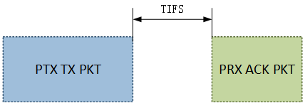
TIFS
Both of the PTX and PRX roles support auto ACK mode, the radio will handle the acknowledge packet automatically.
When enabled, the PTX role will start an acknowledge listening window after a short delay named as TIFS from the end of transmitting the tx packet.
If there is a packet listened, the window closes right now, otherwise the window times out and closes the listening.
When enabled, every time after a packet is received and a short TIFS delay, the PRX role will transmit an acknowledge packet.
If the continuous mode is enabled, the PRX role will continue to listen after transmitting the acknowledge packet.
GPIO Triggered PTX Mode
The PTX role supports GPIO trigger feature. When the feature is enabled, after the GPIO signal happens, the hardware will trigger a PTX Enable command automatically. This feature will eliminate the jitter delay introduced by the software triggering a PTX Enable command at the GPIO signal interrupt handler. So this feature is useful in the scenario requiring high precision of transmit delay.
Sub-state Machine
The sub-state machines in different modes of each state will be introduced below.
PTX State Machine
{kind=link}
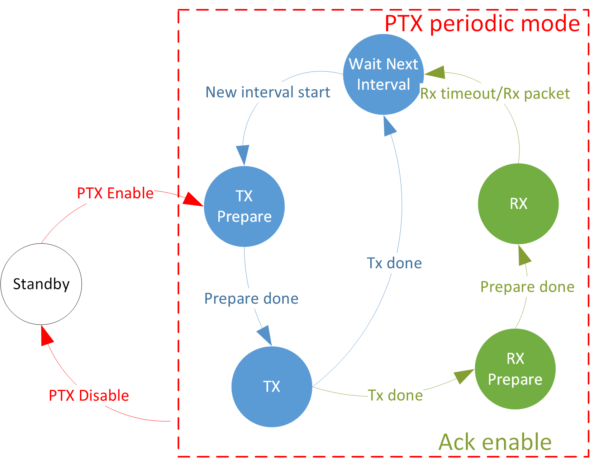
PTX Periodic Mode State Machine
{kind=link}
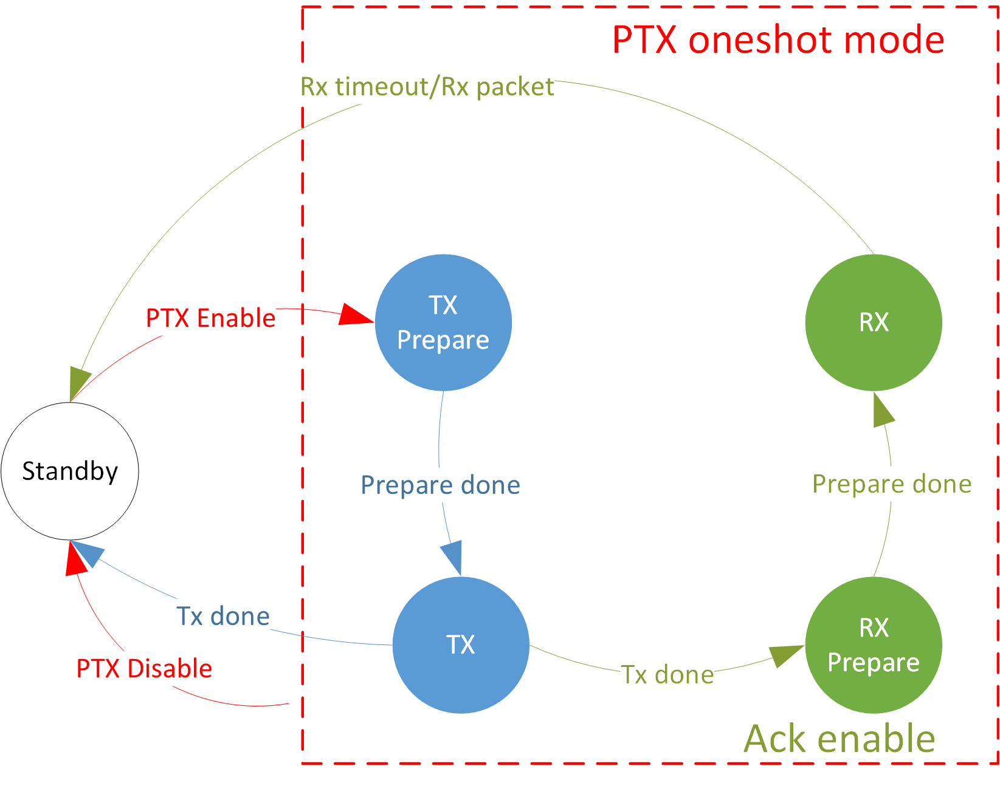
PTX Oneshot Mode State Machine
PRX State Machine
{kind=link}
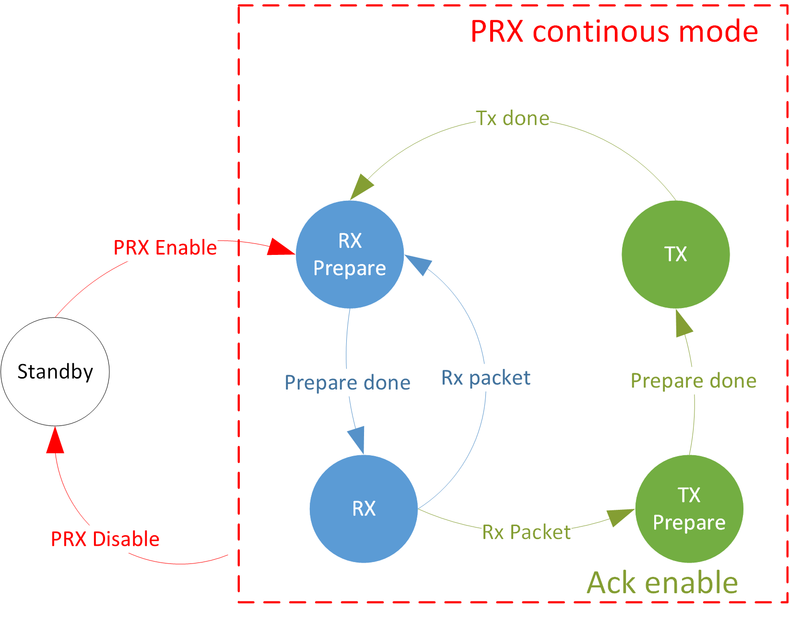
PRX Continuous Mode State Machine
{kind=link}
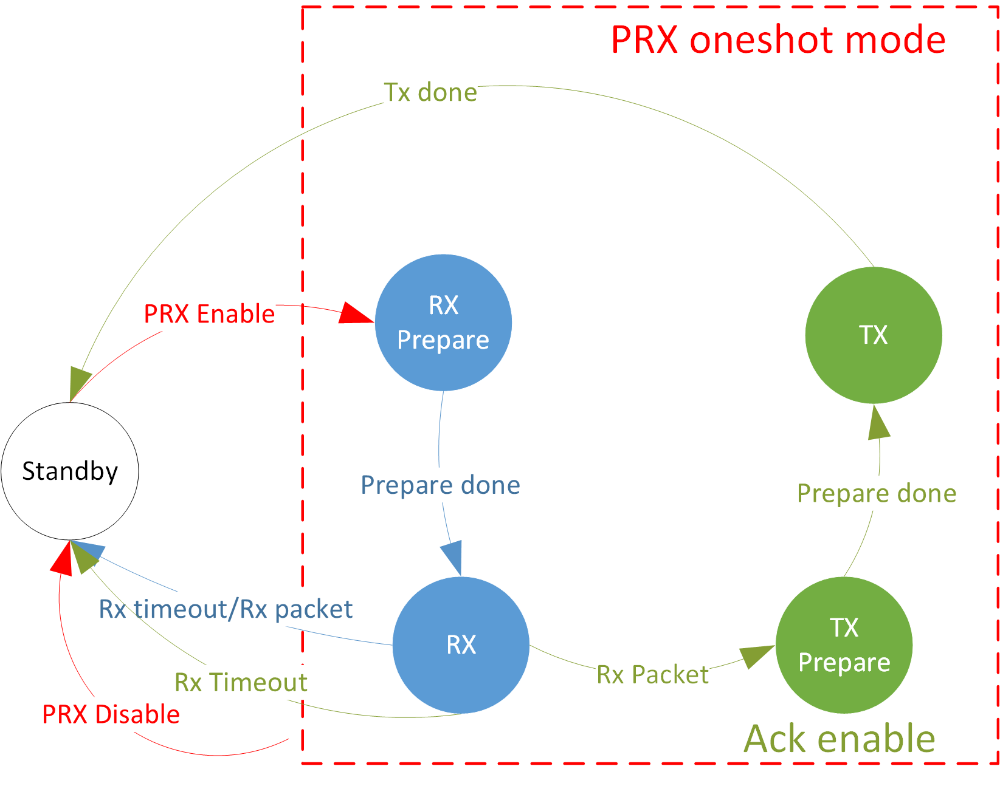
PRX Oneshot Mode State Machine
PSD State Machine

PSD State Machine
TRX Timing Diagram
The above chapters introduce the TRX behavior of the PTX role and the PRX role in different modes, the TRX timing is as shown in Figure TRX Timing Diagram. ACK mode corresponds to the dotted lines and dotted boxes of PTX role oneshot/periodic mode and PRX role oneshot mode in the figure. That is, only when ACK mode is turned on, the corresponding behavior will occur. In GPIO Triggered PTX mode, the GPIO signal is equivalent to the Enable command in the figure, that is, the GPIO signal triggers PTX.
{kind=link}
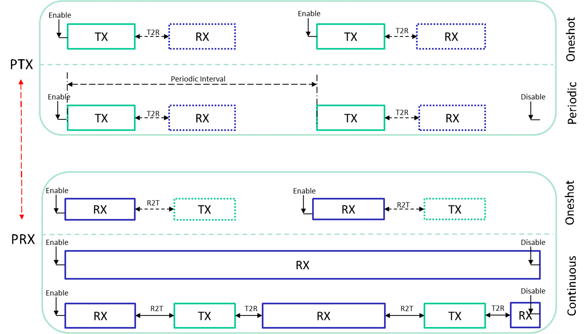
TRX Timing Diagram
Instruction
The PRO_INSTRUCTION register is the instruction issuance register.
Using each instruction will switch the radio into the corresponding state.
The supported commands are as follows.
Instruction ID |
Function |
Note |
|---|---|---|
0 |
ptx enable |
enter ptx state |
1 |
prx enable |
enter prx state |
2 |
ptx disable |
exit ptx state |
3 |
prx disable |
exit prx state |
4 |
psd enable |
enter PSD state |
5 |
psd disable |
exit PSD state |
Interrupt
Various interrupts will be generated when the radio is running, as follows:
tx interrupt |
triggered when tx done |
|---|---|
rx interrupt |
triggered when rx timeout or rx packet |
tx early interrupt |
in the periodic mode of PTX, except for the first time, triggered before each tx prepare |
gpio interrupt |
in the gpio trigger mode of PTX, triggered when gpio signal is valid |
kill ptx interrupt |
triggered when ptx disable is done |
kill prx interrupt |
triggered when prx disable is done |
reset trigger interrupt |
triggered when reset radio is done |
psd interrupt |
triggered when psd is done |
tx interrupt |
triggered when tx done |
Except for PSD interrupt, the interrupt flags of all interrupts are in the PRO_MISR register.
Except for tx interrupt and rx interrupt, all interrupts are cleared by writing 1 to the corresponding interrupt flag bit.
The interrupts of tx interrupt and rx interrupt will only be cleared when the tx stack and rx stack are cleared.
The trx stack will be introduced in TRX Stack.
The interrupt flag and interrupt clearing of PSD interrupt are implemented by the bottom layer and do not require 2.4G control.
TRX Stack
When the radio triggers the tx interrupt, it will package all kinds of information of tx and send it to the tx stack. When the radio triggers the rx interrupt, it will package all kinds of information of rx and send it to the rx stack. Software can use this information in the interrupt handler, and only when this information is read out the corresponding interrupt will be cleared.
Tx Stack information contains the following register:
PRO_TX_STACK
PRO_TX_HS_LOWER
PRO_TX_HS_UPPER
PRO_TX_LENGTH (read pop tx stack)
PRO_TX_CLK_LOWER
PRO_TX_CLK_UPPER
Rx Stack information contains the following register:
PRO_RSSI
PRO_LENGTH_INCLUDE_ADDON
PRO_LENGTH
PRO_RX_STACK
PRO_RX_HP
PRO_RX_CRC_LOWER
PRO_RX_CRC_UPPER
PRO_ACCHIT_CLK_LOWER
PRO_ACCHIT_CLK_UPPER
PRO_RX_HS_LOWER
PRO_RX_HS_UPPER (read pop rx stack)
The trx stack is a FIFO structure with a depth of 4, and each member contains the above information register set.
The hardware will automatically push into the FIFO of the trx stack during trx.
The software will automatically pop the FIFO of the tx stack when reading register PRO_TX_LENGTH, and will automatically pop the FIFO of the rx stack when
reading register PRO_RX_HS_UPPER.
In order to ensure that the register contents are normal, reading other registers in the trx stack needs to be done before reading the register that
triggers the pop action.
TRX Data FIFO
Radio sends and receives data with FIFO. The TX FIFO size is 8 packets of data, and the RX FIFO size is 2KB.
When the TX FIFO is empty, that is, the read pointer of the TX FIFO is equal to the write pointer, and the hardware will send an empty packet. When the software sends data to the TX FIFO, it will increase the write pointer of the TX FIFO by one. After the hardware has sent a piece of data, it can continue to retransmit the data, or it can update the read pointer + 1 of the TX FIFO to switch to the next piece of data.
When the hardware receives the packet, it will automatically send it to the RX FIFO and trigger the rx interrupt. The software can read the RX FIFO and retrieve the data in the rx interrupt service program.
Multiple Channels
Many-to-many communication is achieved through multiple channels. Each channel has an independent TX FIFO and some independent parameters, such as access address. Some parameters are independent for each channel, and some parameters are common to all channels. For multi-channel parameters, please distinguish between those with numbers in the HW register and those with an entry parameter in the driver API parameters. Both the PTX and PRX roles support multi-channel sending and receiving messages.
DLPS
The radio is allowed to enter the DLPS state only when it is in the standby state.
Driver
The driver files are located at the subsys\ppt\driver directory.
There are two subdirectories: common and simple.
The APIs provided in the common directory are basic interfaces, including the register access API, general configuration API, and some common API.
The APIs provided at the simple directory are wrappers based on common interfaces, including initialization, mode management, memory management, state machine management, etc. The simple wrapper makes it easy to use the radio.
Since the features of the radio are affluent, besides 2.4G proprietary protocols and application requirements are ever changing, the simple wrapper won't be able to meet all the requirements. In the future, we will improve the implementation, or provide a new wrapper option. The user can also extend the interfaces based on the common driver.
Common
The main files of the common module are:
ppt_hw_reg.hppt_driver.hppt_driver.c
Register Access
Registers are all 2 bytes in length.
Their definitions are in the header file ppt_hw_reg.h, including register names and field definitions.
Examples of register names are shown below.
#define PRO_INSTRUCTION 0x0 #define PRO_BASE0_LOWER 0x4 #define PRO_BASE0_UPPER 0x6
An example of register field definition is shown below.
/* 0x0 7:0 RW instruction 0x0 15:8 RO rsvd 0x0 */ typedef union _PRO_INSTRUCTION_TYPE { uint16_t d16; struct { uint16_t instruction: 8; uint16_t rsvd: 8; }; } PRO_INSTRUCTION_TYPE; /* 0x4 15:0 RW base0[15:0] 0x0 */ typedef union _PRO_BASE0_LOWER_TYPE { uint16_t d16; struct { uint16_t base0_15_0; }; } PRO_BASE0_LOWER_TYPE; /* 0x6 15:0 RW base0[31:16] 0x0 */ typedef union _PRO_BASE0_UPPER_TYPE { uint16_t d16; struct { uint16_t base0_31_16; }; } PRO_BASE0_UPPER_TYPE;
Note
Functions and macros for accessing registers are provided in
ppt_driver.handppt_driver.c.Macros provide richer interfaces, and it is recommended to use macros to access registers.
The functions for register reading and writing are as follows:
Register Access Functions Function
Description
read register
write register
The macro for register access is as follows:
Register Access Macros Macro
Description
read register
write register
update some bits in the register: update the data & mask into the register
read a specific field of a register
write a specific field of a register
update a specific field of a register
update some bits of a specific field of a register
RF Channel
The channel is specified by two parameters: bank index and channel index. It is divided into only 1 bank, and the frequency bands supported by each bank are as shown in the following table. The channel index is the offset relative to the starting frequency of the bank. For example, 2403 MHz corresponds to bank 0, channel 1.
Bank |
Frequency Band |
|---|---|
0 |
2402~2480 MHz |
Using the API
ppt_set_phy_channel(), the input frequency in unit of MHz will be automatically converted into bank and channel.
TX Power
Using the API
ppt_set_tx_power_dbm()to set the tx power.
PHY Type
Phy type is divided into rx PHY and tx PHY, and rx PHY is common to all channels, while tx PHY is independent for each channel.
Using the API
ppt_set_phy_rx_type()to set the rx PHY type.Using the API
ppt_set_phy_tx_type()to set the tx PHY type.
Frame Format
Frame format configuration involves a preamble, access address, header, and CRC. The preamble is independent for each channel, while address, hp, length, and hs are common to all channels. The CRC length is common to all channels, while the CRC poly and init are independent for each channel.
Using the API
ppt_set_preamble_len()to set the length of the preamble field.Using the API
ppt_set_pkt_format()to set the frame format.Using the API
ppt_set_crc_param()to set the CRC common parameters.Using the API
ppt_set_crc_entry_param()to set the CRC channel specific parameters.
Whitening
Whitening is turned on by default. The whitening switch is common to all channels, and length, poly, and init are independent for each channel.
Using the API
ppt_set_white_param()to set the whitening common parameters.Using the API
ppt_set_white_entry_param()to set the whitening channel specific parameters.
TIFS
When using ACK mode, the TIFS parameters on both ends need to be configured to be consistent.
Using the API
ppt_set_tifs()to set the TIFS parameter.
TX Access Address
Tx access address supports 4 byte or 5 byte.
Using the API
ppt_set_tx_addr()to set the tx access address.
RX Access Address
Rx access address supports 4 byte or 5 byte.
Using the API
ppt_set_rx_addr()to set the rx access address.
TX Header
The tx header includes three fields: hp, length, and hs.
Using the API
ppt_set_hp()to set the tx header prefix.The content of the length field is automatically configured according to the payload length during tx data.
Using the API
ppt_set_hs()to set the tx header suffix.
When tx is completed, the tx header information can also be confirmed in the tx stack, as shown below.
/* read concerned tx stack registers before pop tx stack */
PRO_TX_STACK_TYPE tx_stack = {.d16 = RD_PPT_REG(PRO_TX_STACK)}; // hp located at tx_stack.hp
PRO_TX_HS_LOWER_TYPE tx_hs_lower = {.d16 = RD_PPT_REG(PRO_TX_HS_LOWER)};
PRO_TX_HS_UPPER_TYPE tx_hs_upper = {.d16 = RD_PPT_REG(PRO_TX_HS_UPPER)};
uint32_t tx_hs = tx_hs_lower.tx_hs_15_0 + (tx_hs_upper.tx_hs_30_16 << 16);
/* pop tx stack */
PRO_TX_LENGTH_TYPE tx_length = {.d16 = RD_PPT_REG(PRO_TX_LENGTH)};
RX Header
The rx header includes three fields: hp, length, and hs. All their contents are stored in the rx stack and are obtained when popping the rx stack, as shown below.
/* read concerned rx stack registers before pop rx stack */
PRO_RX_HP_TYPE rx_hp = {.d16 = RD_PPT_REG(PRO_RX_HP)};
PRO_LENGTH_TYPE rx_length = {.d16 = RD_PPT_REG(PRO_LENGTH)};
PRO_RX_HS_LOWER_TYPE rx_hs_lower = {.d16 = RD_PPT_REG(PRO_RX_HS_LOWER)};
/* pop rx stack */
PRO_RX_HS_UPPER_TYPE rx_hs_upper = {.d16 = RD_PPT_REG(PRO_RX_HS_UPPER)};
TX Data FIFO
The data to be sent is placed in the tx data FIFO. It is pushed into the FIFO before sending and popped out of the FIFO after sending.
The RAM address pushed into the FIFO can only be of buffer RAM type.
Using the API
ppt_push_tx_fifo()to push to the tx data FIFO.Using the API
ppt_trigger_fw_ackto pop from the tx data FIFO.
RX Data FIFO
The software uses the pop rx data FIFO operation to read and receive data.
The RAM address that pops out of the FIFO can only be of buffer RAM type.
It should be noted that the data in the FIFO not only contains payload, but also header.
If the total length of the header is not 2-byte aligned, the hardware will automatically complete and send it to the FIFO.
The payload length of RX is obtained from the register PRO_LENGTH of the rx stack.
Using the API
ppt_pop_rx_fifo()to pop from the rx data FIFO.
Interrupt
The interrupt service routine needs to be registered to take effect. The types of interrupts that can be handled are described in Interrupt.
Using the API
ppt_reg_handler()to register the radio interrupt service routine.The following is an example of an interrupt service routine:
static PPT_ISR_SECTION void ppt_isr_handler(void) { PRO_MISR_TYPE reg_misr; reg_misr.d16 = RD_PPT_REG(PRO_MISR); APP_PRINT_INFO1("ppt_isr_handler: 0x%04x", reg_misr.d16); if (reg_misr.tx_int) { /* read concerned tx stack registers before pop tx stack */ PRO_TX_STACK_TYPE tx_stack = {.d16 = RD_PPT_REG(PRO_TX_STACK)}; PRO_TX_HS_LOWER_TYPE tx_hs_lower = {.d16 = RD_PPT_REG(PRO_TX_HS_LOWER)}; PRO_TX_HS_UPPER_TYPE tx_hs_upper = {.d16 = RD_PPT_REG(PRO_TX_HS_UPPER)}; uint32_t tx_hs = tx_hs_lower.tx_hs_15_0 + (tx_hs_upper.tx_hs_30_16 << 16); PRO_TX_CLK_LOWER_TYPE tx_clk_lower = {.d16 = RD_PPT_REG(PRO_TX_CLK_LOWER)}; PRO_TX_CLK_UPPER_TYPE tx_clk_upper = {.d16 = RD_PPT_REG(PRO_TX_CLK_UPPER)}; /* pop tx stack */ PRO_TX_LENGTH_TYPE tx_length = {.d16 = RD_PPT_REG(PRO_TX_LENGTH)}; APP_PRINT_INFO7("ptx: tx no tx %d, empty %d, tptr %d, entry %d, hp 0x%02x, len %d, hs 0x%08x", tx_stack.is_no_tx, tx_stack.is_empty, tx_stack.tx_ptr, tx_stack.tx_entry_1_0, tx_stack.tx_hp, tx_length.tx_length, tx_hs); } if (reg_misr.rx_int) { /* read concerned rx stack registers before pop rx stack */ PRO_RSSI_TYPE rssi = {.d16 = RD_PPT_REG(PRO_RSSI)}; PRO_LENGTH_TYPE rx_length = {.d16 = RD_PPT_REG(PRO_LENGTH)}; PRO_RX_STACK_TYPE rx_stack = {.d16 = RD_PPT_REG(PRO_RX_STACK)}; PRO_RX_HP_TYPE rx_hp = {.d16 = RD_PPT_REG(PRO_RX_HP)}; PRO_ACCHIT_CLK_LOWER_TYPE acchit_clk_lower = {.d16 = RD_PPT_REG(PRO_ACCHIT_CLK_LOWER)}; PRO_ACCHIT_CLK_UPPER_TYPE acchit_clk_upper = {.d16 = RD_PPT_REG(PRO_ACCHIT_CLK_UPPER)}; PRO_RX_CRC_LOWER_TYPE rx_crc_lower = {.d16 = RD_PPT_REG(PRO_RX_CRC_LOWER)}; PRO_RX_CRC_UPPER_TYPE rx_crc_upper = {.d16 = RD_PPT_REG(PRO_RX_CRC_UPPER)}; PRO_RX_HS_LOWER_TYPE rx_hs_lower = {.d16 = RD_PPT_REG(PRO_RX_HS_LOWER)}; /* pop rx stack */ PRO_RX_HS_UPPER_TYPE rx_hs_upper = {.d16 = RD_PPT_REG(PRO_RX_HS_UPPER)}; uint32_t rx_hs = rx_hs_lower.hs_15_0 + (rx_hs_upper.hs_30_16 << 16); if (rx_stack.rx_time_out || rx_stack.rx_hit == false) { APP_PRINT_ERROR0("ptx: rx timeout"); } else if (rx_stack.rx_abort_rd) { APP_PRINT_ERROR0("ptx: rx abort"); } else if (rx_stack.is_crc_error) { APP_PRINT_ERROR0("ptx: rx crc error"); } else { rx_num += 1; uint8_t rx_entry = PPT_RX_STACK_ENTRY(rx_stack); uint16_t rx_len = rx_length.d16 + PDU_HEADER_LEN; uint8_t *rx_buffer = ppt_pop_rx_data_by_entry(rx_entry, rx_len); APP_PRINT_INFO6("ptx: rx count %d, rx stack 0x%04x, len (incl header) %d, hp 0x%02x, hs 0x%08x, header+payload %b", rx_num, rx_stack.d16, rx_len, rx_hp.hp, rx_hs, TRACE_BINARY(rx_len, rx_buffer)); } } if (reg_misr.tx_early_int) { WR_PPT_REG(PRO_MISR, BIT2); } if (reg_misr.gpio_int) { WR_PPT_REG(PRO_MISR, BIT3); } if (reg_misr.kill_ptx_int) { WR_PPT_REG(PRO_MISR, BIT4); ppt_flush_rx_fifo(); ppt_ctx->fsm = PPT_FSM_STANDBY; ppt_ctx->sync_flag = false; } if (reg_misr.kill_prx_int) { WR_PPT_REG(PRO_MISR, BIT5); ppt_flush_rx_fifo(); ppt_ctx->fsm = PPT_FSM_STANDBY; ppt_ctx->sync_flag = false; } if (reg_misr.reset_trig_int) { WR_PPT_REG(PRO_MISR, BIT6); ppt_flush_rx_fifo(); ppt_ctx->fsm = PPT_FSM_STANDBY; ppt_ctx->sync_flag = false; } }
PTX Modes
PTX supports oneshot/periodic and ack/non-ack modes. In periodic mode, you need to configure more interval parameters, and the interval unit is 125us. Assuming that the interval parameter is configured as n, the actual interval = (n+1)*125us.
Using the API
ppt_set_ptx_mode()to configure the PTX mode.
PRX Modes
PRX supports oneshot/continuous and ack/non-ack modes.
Using the API
ppt_set_prx_mode()to configure the PRX mode.
PSD Modes
PSD supports multi-channel continuous detection (up to 10 channels), and the start and end channels and steps need to be specified. The start and end channel parameters are offsets relative to the starting frequency point of the rf bank. For example 2430MHz, the offset is 28MHz relative to 2402MHz, then configure the psd channel parameter to 28.
Using the API
ppt_set_psd_mode()to configure the PSD mode.
Instruction
Switch the radio status through instructions.
Using the API
ppt_execute_instruction()to give instruction.
DLPS
When it is necessary to support entering the DLPS state, the function ppt_dlps_init() needs to be called.
Simple
The relevant files of the Simple module are:
ppt_simple.hppt_simple.c
Initialization
Simple level encapsulates an initialization function and does some configuration of the software and hardware.
The initialization function ppt_init() needs to be called first.
TRX Data
Simple level TRX allocates buffer ram type memory for storing data. When calling the trx data sending and receiving function on the simple level, the buffer ram type is not required.
Using the API
ppt_push_tx_data()to send data to the TX FIFO of the default channel 0.Using the API
ppt_push_tx_data_by_entry()to send data to the TX FIFO of a specific channel.Using the API
ppt_pop_rx_data()to attain data from the RX FIFO of the default channel 0.Using the API
ppt_pop_rx_data_by_entry()to attain data from the RX FIFO of a specific channel.
PTX
Simple level PTX encapsulates functions such as parameter configuration, state machine management, synchronous and asynchronous calls, and periodic mode specified retransmission times. Only when the state machine is idle, PTX can be enabled. For the synchronous calls, please refer to the interrupt handling of the demo project. For the asynchronous calls, the user manages the state machine and callbacks themselves.
The PTX Enable synchronous call will not return until the trx action is completed. For example, in PTX oneshot mode, the API will not be returned until both tx and rx (if ack is enabled) are executed. In PTX periodic mode, the packets will be retransmitted a specified number of times before it is acknowledged.
The PTX Disable synchronous call will not return until the PTX kill interrupt is completed.
Using the API
ppt_set_ptx_mode_ext()to configure the PTX mode.Using the API
ppt_enable_ptx()to enable PTX.Using the API
ppt_disable_ptx()to disable PTX.
PRX
Simple level PRX encapsulates functions such as parameter configuration, state machine management, synchronous and asynchronous calls. Only when the state machine is idle PRX can be enabled. For the synchronous calls, please refer to the interrupt handling of the demo project. For the asynchronous calls, the user manages the state machine and callbacks themselves.
The PRX Enable synchronous call will not return until the trx action is completed. For example, in PRX oneshot mode, the API will not be returned until both rx and tx (if ack is enabled) are executed. In PRX continuous mode, there is no ending, so the user need design an end condition.
The PRX Disable synchronous call will not return until the PRX kill interrupt is completed.
Using the API
ppt_set_prx_mode_ext()to configure the PRX mode.Using the API
ppt_enable_prx()to enable PRX.Using the API
ppt_disable_prx()to disable PRX.
PSD
Simple level PSD encapsulates functions such as parameter configuration, state machine management, synchronous and asynchronous calls, interrupt processing, and result collection. Only when the state machine is idle PSD can be enabled.
The Enable PSD synchronous call action will not return until the execution is completed, and the asynchronous call will call back notification in the interrupt.
After the PSD execution is completed, the results are collected and can be obtained based on the channel index.
Using the API
ppt_set_psd_mode_ext()to configure the PSD mode.Using the API
ppt_enable_psd()to enable PSD.Using the API
ppt_get_psd_result()to get PSD result of a specific RF channel.
Usage Flow
Configuration Flow
The software and hardware configuration flow of the 2.4G module is shown in Figure 2.4G Configuration Flow.
{kind=link}
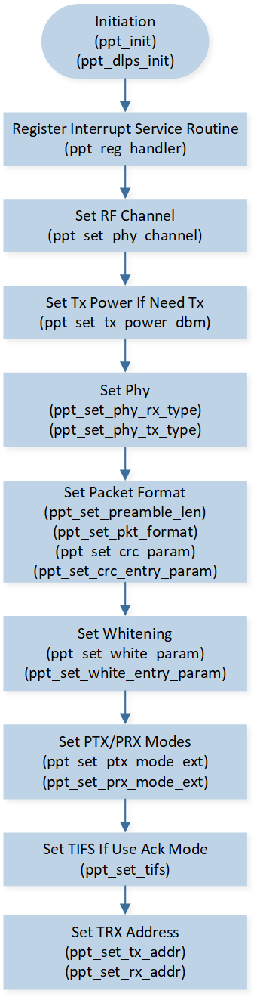
2.4G Configuration Flow
PTX/PRX Start & Stop Flow
The PTX/PRX start flow is shown in Figure PTX/PRX Start Flow.

PTX/PRX Start Flow
When PTX uses periodic mode and PRX uses continuous mode, PTX and PRX will continue to work after startup until they are actively stopped by the user. The PTX and PRX stop process is shown in Figure PTX/PRX Stop Flow.

PTX/PRX Stop Flow
Send Flow
Whether it is PTX or PRX, it is necessary to prepare the header and payload before TX starts, as shown in Figure Send Flow. The hardware will automatically send out when the TX timing arrives. Please refer to TRX Timing Diagram for the hardware TX timing. The user needs to choose the timing of the header and payload settings. After TX is successful, a TX interrupt will be generated, and the user can read the TX information. Please refer to Interrupt for the reading process. When this packet is no longer needed, the software notifies the hardware to pop out the payload of the packet from the TX FIFO.

Send Flow
Receive Flow
Data reception is handled in the interrupt service routine. When an RX interrupt occurs, the RX result is judged through the RX status register in the Rx Stack, and the RX header and RX payload are obtained. The process is shown in Figure Receive Flow. For the complete interrupt service program, please refer to Interrupt.
{kind=link}
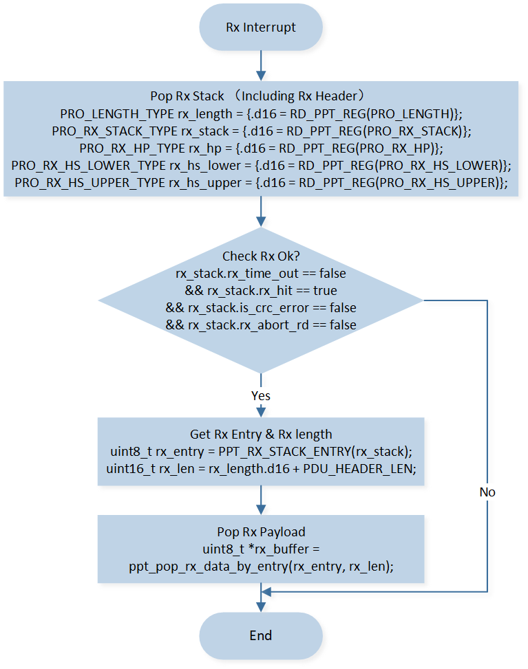
Receive Flow
PSD Flow
After the 2.4G module is initialized, the PSD process can be executed to obtain the interference signal strength of the channel. The process is shown in Figure PSD Flow.
{kind=link}
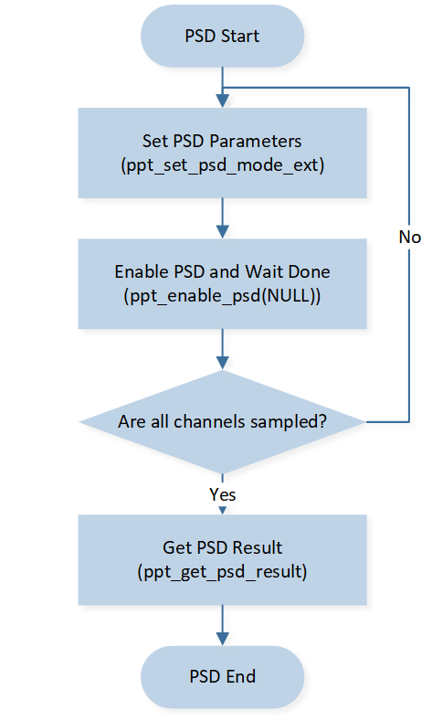
PSD Flow
Notes
MP Tool Configuration
The 2.4G radio module needs to reuse BLE resources, and each channel's TX FIFO corresponds to a BLE master link resource, refer to the chapter Multiple Channels. Therefore, it is necessary to configure the number of BLE master links through the MP Tool to be equal to the number of 2.4G channels used, as shown in Figure MP Tool Configuration.

MP Tool Configuration
Sample Projects
This module provides examples for user reference, see Simple TRX for details.
See Also
Please refer to the relevant API Reference: